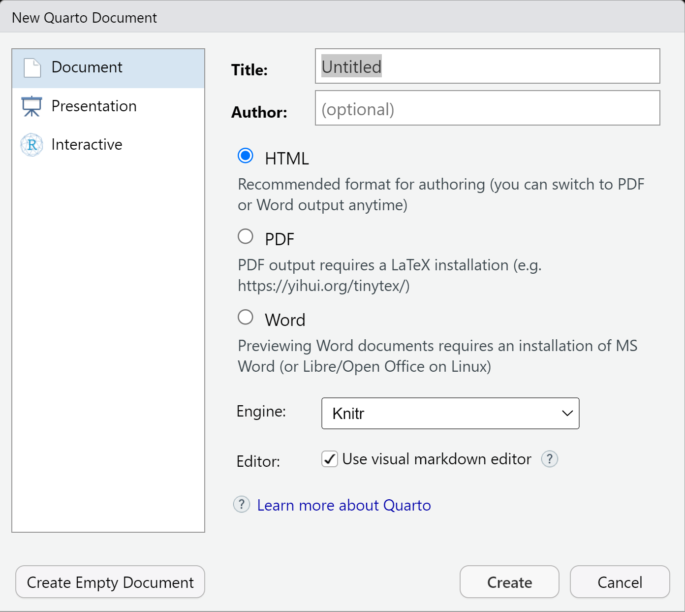
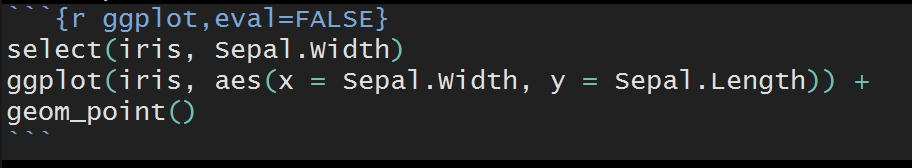

Quarto and Markdown
Documenting Thoughts
We need to make sure that we document our thoughts and process as we work through cleaning our data, summarizing it, and fitting our models.
Quarto: Next generation version of R Markdown!
- Built to use multiple programming languages (R, python, and Julia) easily
- Works with Jupyter Notebook format as well
- Created via a
.qmd(quarto markdown file) - Renders most .Rmd files as is!
Designed to be used in three ways (R for Data Science)
Communicating to decision makers (focus on conclusions not code)
Collaborating with other data scientists (including future you!)
As environment to do data science (documents what you did and what you were thinking)
It is easy to create many types of documents in quarto! Go to file –> New File –> Quarto Document
Elements of a Quarto Document
YAML header
Markdown text
Code chunks
YAML Header
YAML (“Yet Another Markup Language” or “YAML ain’t markup language”)
- Defines settings for the creation process
---
title: "Untitled"
format: html
editor: visual
---Markdown Syntax
Quarto uses a Markdown language
- HTML is the most commonly known markup language
<h1>My first level header</h1>
<a href = "https://www.google.com">Link to a search engine.</a>
- Markdown is a simpler version of this
# My first level header
[Link to a search engine](https://www.google.com)
Code Chunks
Where R markdown and quarto go beyond is in the ability to weave R code into the equation!
- You can include code chunks in your markdown.
- You then render the markdown through RStudio (or the command line).
- The R code runs and output is included in the final document!
- It is very awesome.
Start a code chunk by typing out the syntax or with CTRL/CMD + Alt/Option + I
When rendering:
- Chunks run sequentially in the document
- Chunks share objects. Essentially an R environment is created when rendering a document and all objects created in chunks are stored in it.
- Can specify behavior of each code chunk (show R code or hide it, evaluate or don’t evaluate) and set global chunk behavior
Code Chunk Options
To change the behavior of code chunks, we use chunk options:
- Hide/show code with
echo = FALSE/TRUE
- Choose if code is evaluated with
eval = TRUE/FALSE
- Have code evaluate, not show, and show no output with
include = TRUE/FALSE - Turn on/off displaying of messages or warnings with
message = TRUE/FALSEandwarning = TRUE/FALSE
These code chunks are specified via

or

With quarto, if you want to specify global chunk options the best way to do so is in the YAML header. Be very careful about spacing in YAML headers!
Here is an example that would make all code chunks be ‘collapsed’ by default.
---
title: "My Document"
format: html
knitr:
opts_chunk:
collapse: true
---Resources
Much more is available on the quarto docs page, the RStudio quarto integration page, and in the R for Data Science book.
[Cheat Sheet link](https://rstudio.github.io/cheatsheets/quarto.pdf)\(\rightarrow\) Cheat Sheet link
Check this site for markdown basics. (Headers can be used to easily create a table of contents (and is useful for accessibility of documents).)
Recap
Git is a version control software
- Associated with a folder (repo)
- Tracks changes to files
Github is an online hosting service for Git-based projects
Quarto allows you to document your thought process and code
Combining github and quarto allows you to communicate and collaborate easily!
Check here for information about creating a web site with quarto and GitHub.